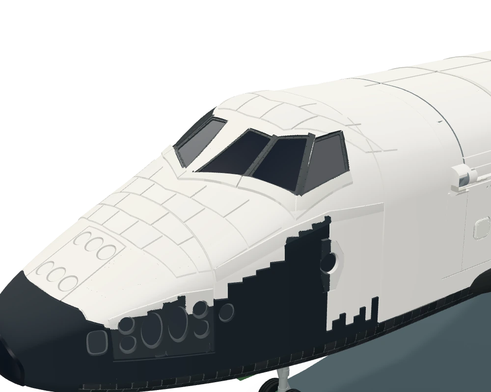

Загружаем модель…
Буран
Испытательный макет БТС-001 с ВДНХ в масштабе 1:144.
Ракурсы и механизмы
Вращайте мышью, приближайте колёсиком.Вращайте пальцем, приближайте двумя. Коснитесь детали или выберите её в списке.
Крупным планом



Мастерская
Откройте сборку в FreeCAD или загрузите в слайсер 18 деталей и два посадочных калибра.
Размеры
- Масштаб
- 1:144
- Корпус без шасси и подставки
- 255,08 × 166,6 × 97,13 мм
- Сборка на подставке
- 255,08 × 166,6 × 125,52 мм
Печать и сборка
Начните с калибров: слой 0,05 мм, номинальный зазор 0,20 мм на сторону.
Проверьте посадку на калибрах
Рабочая область Photon Mono 4: 153,4 × 87 × 165 мм. Напечатайте два калибра: Гребёнка зазоров · Пробная шпонка. Одна, две и три насечки обозначают зазоры 0,10, 0,20 и 0,30 мм на сторону соответственно.
После промывки, сушки и досветки проверьте посадку ключом. Она зависит от смолы, экспозиции и досветки: цифровая проверка габаритов не заменяет пробную печать.
Расставьте поддержки и оставьте слив
Импортируйте STL в миллиметрах без изменения масштаба. Детали ориентированы для печати и стоят на Z = 0. Поддержек в файлах нет: ставьте их на скрытых поверхностях. Оставьте открытыми торцы крупных секций и слив Ø4,8 мм в носу, чтобы промыть и досветить полости до сборки.
Подставка полая: снизу открыты двухмиллиметровая оболочка и рёбра жёсткости. Не перекрывайте отток смолы поддержками; после печати промойте промежутки между рёбрами и карманы трёх цоколей.
Примерьте и соедините детали
Сначала примерьте всё без клея. Перед грунтованием закройте маской цапфы, пазы и гнёзда. Склеивайте только неподвижные стыки корпуса, крыльев и киля.
- Соедините нос, центроплан и корму.
- Установите замыкающую панель и нижний щиток.
- Присоедините крылья и киль. С каждой стороны киля вставьте штифт нижней панели тормоза в гнездо сверху вдоль оси, затем установите верхнюю панель. Снимайте в обратном порядке, раскрыв тормоз. Не заклеивайте шарниры.
- Приоткройте каждую створку отсека на 57° от закрытого положения. Снаружи одновременно введите обе цапфы в торцевые пазы и поверните створку до упора на 112°. Снимайте только при 57°, не отгибая щёки и не применяя клей.
- Вставьте три съёмные опоры шасси в корпус, затем опустите их на цоколи подставки. Оставьте посадки без клея.
Со смолой и промывочной жидкостью работайте в перчатках, при вентиляции, по инструкции производителя.
Прототип на ВДНХ
В Москве стоит не орбитальный корабль, а полноразмерный БТС-001 для наземных испытаний. В космос он не летал.
В 2014 году макет перевезли из Парка Горького на ВДНХ. Для миниатюры взяли его музейный облик: белый верх, тёмное днище и треугольные крылья. Форму уточняли по фотографиям, а масштаб вывели из длины и размаха орбитера (36,4 и 24 м), не из обмера БТС-001.
На ВДНХ торец закрыт переходом. В миниатюре показана корма до переезда: две глухие чаши, овальный щит и верхний обтекатель. Лестницу не воспроизводили. Отсек с набором рам и тормоз сделаны открывающимися для осмотра модели, а не как копии действующих механизмов экспоната.